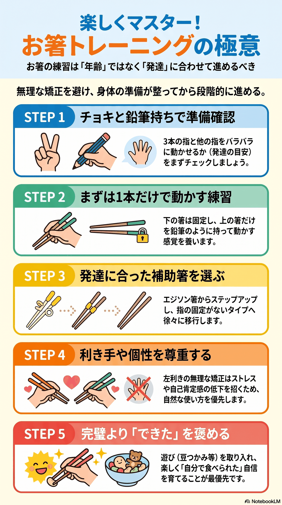

CONTENTSもくじ
‹ 個別支援計画のたね に戻るOVERVIEWひと目でわかる5つの極意
箸の練習は「年齢」ではなく「発達」に合わせて進めます。無理な矯正を避け、身体の準備が整ってから段階的に。詳しい進め方は、この下の各節にあります。

OUTLINE1 プログラムの位置づけ
| 五領域 | 健康・生活（食事のADL自立）／運動・感覚（手指の巧緻性・分離運動）／人間関係・社会性（食事場面での自信） |
|---|---|
| ねらい | 箸を用いた食事動作の自立度を高め、給食・外食の場面での自己肯定感を育てる |
| 対象 | 小学校低学年〜中学年（未就学児・高学年にも段階調整で対応可） |
| 形態 | 個別（10〜15分）＋小集団（ゲーム形式15分） |
| 頻度 | 週1〜2回 × 12週で1クール |
| 場面 | おやつ前の課題タイム／給食前のウォーミングアップ |
このプログラムのいちばん大事な原則。
食事は「毎日・人前で・失敗が目立つ」動作です。全体を通して 「食べられること ＞ 正しく持てること」 を優先し、食事中の直接指導は行いません。練習は必ず食事場面から切り離した「遊びの時間」として設定します。
食事は「毎日・人前で・失敗が目立つ」動作です。全体を通して 「食べられること ＞ 正しく持てること」 を優先し、食事中の直接指導は行いません。練習は必ず食事場面から切り離した「遊びの時間」として設定します。
ASSESSMENT2 アセスメント（初回・4週ごと）
2-1 いまの持ち方の段階
| 段階 | 状態 | 見立て |
|---|---|---|
| L0 | 手のひら全体で握る（握り込み持ち） | 手指の分離が未成熟 |
| L1 | 4本指で上から握る（グー持ち・上握り） | 前腕が回内位のまま |
| L2 | 2本の箸を同時に動かす（ピンセット持ち・クロス持ち） | 下の箸が固定できない |
| L3 | 下の箸は固定できるが、指の位置が崩れる | あと一歩 |
| L4 | 下は固定・上だけ可動（標準的な持ち方） | 目標段階 |
2-2 前提スキルのチェック
ひとつでも欠けていれば、箸を持たせる前に「準備期」から始めます。
- スプーンを鉛筆持ち（3指持ち）で使える
- 親指・人差し指・中指の3本でつまめる（小さいシールをはがせる）
- 薬指・小指を曲げたまま、他の指を動かせる（手指の分離）
- 鉛筆・クレヨンを3指で持てる
- 手首を返さずに前腕を安定させられる（机上に肘が置ける）
- 座位が安定している（足の裏が床または足台に着いている）
姿勢が最優先です。足がぶらついていると、手指の細かな動きは育ちません。足台の設置と、椅子・机の高さ調整を、アセスメントの段階で必ず行ってください。ここを飛ばすと、あとの練習がすべて空回りします。
STEPS3 ステップ構成
準備期（2〜4週）— 手指の分離と3指つまみ
| 活動 | 内容 | ねらい |
|---|---|---|
| おはじきポケット | 薬指・小指で小さなスポンジを握ったまま、3指でおはじきをつまむ | 手指の分離 |
| シールはがし | 台紙から小さなシールをはがして貼る | 3指つまみ・指腹つまみ |
| 洗濯ばさみ遊び | 洗濯ばさみを画用紙のふちに留める | 母指対立・力加減 |
| ちぎり絵 | 折り紙を細かくちぎる | 両手の協調 |
| スポイト移し | スポイトで色水を移す | 母指球の使用 |
Step 1（2週）— 下の箸だけ
- 箸を1本だけ持つ。親指の付け根に差し込み、薬指の第一関節で支える
- 「この箸は動かない箸」と名前をつける（例：ねぼすけ箸）
- 支援者が箸先を軽く押し、ぐらつかないか確認する
- 課題：下の箸を保持したまま、空いた指でグーパー
Step 2（2週）— 上の箸だけ
- 箸1本を鉛筆と同じ持ち方（親指・人差し指・中指）で持つ
- 上下にカチカチ動かす（＝はたらき箸）
- 課題：箸先で、机の上の的（シール）をトントンとつつく
Step 3（3週）— 2本を合わせる
- 下の箸を先にセット → 上から上の箸を差し込む、この順番を徹底する
- まだ物はつままない。開閉だけを10回
- 支援者が上の箸の先を指で押さえ、開閉に軽い抵抗をつくる
Step 4（3週）— つまむ
| 難易度 | 教材 | ポイント |
|---|---|---|
| ★ | スポンジキューブ（2cm角） | 軽い・つぶれる・滑らない |
| ★★ | 綿ボール・フェルトボール | 軽いが丸い |
| ★★★ | 大豆・マカロニ | 小さい・硬い |
| ★★★★ | おはじき・ビー玉 | 滑る |
| ★★★★★ | 濡らしたこんにゃく・ゼリー | 実際の食事に近い |
Step 5（2週〜）— 食事場面への般化
- おやつ（一口大の果物、蒸しパンなど）を箸で食べてみる
- 1日1品だけ箸で。ほかはスプーンでよい。品数は少しずつ増やす
- 給食場面では指導しない。できたときだけ認める
GROUP4 小集団プログラム（15分）
| ゲーム | 内容 | 配慮 |
|---|---|---|
| おはしリレー | チームでスポンジを箸で運ぶ | 落としても減点しない。運んだ数だけ数える |
| おはし釣り | フェルトや輪ゴムを箸で釣り上げる | 大きさで難易度を調整 |
| 30秒チャレンジ | 自己ベスト更新方式 | 他児と比べず、自分の記録と比べる |
| おはしでお店やさん | ままごと食材を箸で取り、皿に盛る | 遊びの文脈での自然な使用 |
競争形式は、うまくできない子にとって失敗の可視化になります。必ず自己ベスト更新型にしてください。勝敗を扱う場合は、難易度で個別のハンデ（大きい教材を使う等）を先に設定しておきます。
CARE5 個別の配慮
| 状態像 | 配慮 |
|---|---|
| 筋緊張が低い／握力が弱い | 軽い箸（プラスチック・短め）や補助具（シリコンリング付き矯正箸）を長期使用可とする。「補助具の卒業」を目標にしない |
| 感覚過敏 | 木の質感、塗り箸の匂い、食材の感触に注意。素材を数種類そろえ、本人に選ばせる |
| 不器用さが顕著（DCD傾向） | 準備期を十分にとる。目標を「正しい持ち方」から「自分なりの安定した持ち方で食べきる」に切り替える判断も行う |
| 左利き | 左右を反転させて、まったく同じ手順で。右利きへの矯正はしない |
| 失敗への過敏さ・回避 | 練習は必ず遊びの文脈で。「今日はやらない」を選べる権利を保障する |
| こだわり・変化への抵抗 | いまの持ち方を否定しない。「新しい持ち方も試してみる」と併存させる |
RECORD6 記録
支援きろく帖の「活動・様子」欄に貼り付けて使えます。
【箸プログラム記録】
実施日： 年 月 日／担当：
姿勢 ：足底接地 有・無 ／ 肘の位置 適・不適
段階 ：L0・L1・L2・L3・L4
本日のStep：1・2・3・4・5
つまみ課題：教材 成功 ／10回
30秒で運べた数： 個（前回： 個）
意欲：高・普通・低 ／ 疲労：有・無
様子・特記：
次回の目標：
PLAN7 個別支援計画 記載例
そのままではなく、お子さんの実際の姿と、本人・保護者の意向に合わせて書き直してからお使いください。
【長期目標（6か月）】
給食・おやつの場面で、箸を用いて主菜・副菜を自分で食べることができる。
【短期目標（3か月）】
下の箸を固定した状態で上の箸だけを動かし、2cm角のスポンジを5回中3回以上つまむことができる。
【支援内容】
週2回、おやつ前の10分間、個別課題として段階的な箸操作練習を実施する。姿勢保持のため足台を使用し、手指の分離運動を準備課題として組み込む。食事場面では直接的な持ち方の指導は行わず、成功体験の積み重ねを優先する。小集団活動では自己ベスト更新型のゲームを用い、他児との比較が生じないよう配慮する。
【本人・家族の意向】
（ 本人： ）
（ 保護者： ）
FOR PARENTS8 保護者への連絡文例
おうち連絡帖の連絡文や、連絡帳への記入に。
いつもお世話になっております。
〇〇さんの箸の練習について、事業所での取り組みをお知らせします。
今日は「動かないおはし（下の箸）」を持ったまま、じゃんけんのグーパーができました。ぐらつかずに支えられていて、とても上手です。
ひとつお願いがございます。ご家庭では、食事中に持ち方を直すことはお控えいただけますと幸いです。食事は楽しい時間であることが第一で、練習は遊びの時間として事業所で進めてまいります。
もしご家庭で何かされる場合は、シールはがし、お菓子の袋開け、洗濯ばさみ遊びなど「指先を使う遊び」が、そのまま箸を使う力につながります。ぜひ一緒に楽しんでみてください。
ご家庭にお願いすることは、ひとつだけで十分です。「食事中に直さない」。あれもこれもお願いすると、保護者が食卓で監視役になってしまいます。
ITEMS9 準備物
- 練習用の箸（子ども用・長さ違いで数種／木製・プラスチック）
- 補助具付きの箸（リングタイプ、コネクタタイプ）
- 小皿・トレー（すべり止めマット付き）
- 教材：スポンジキューブ、フェルトボール、大豆、マカロニ、おはじき
- 足台（高さの調整ができるもの）
- 記録シート、タイマー、達成シール台紙